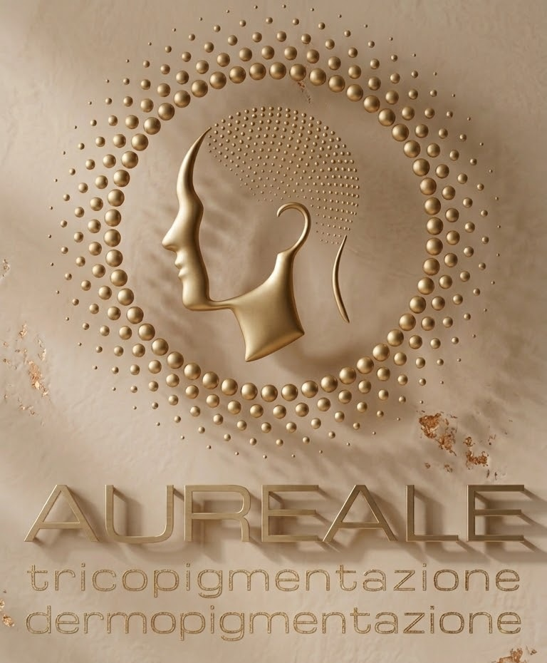

Approfondimenti
Articoli scientifico-divulgativi su alopecia, pigmento e trapianto. Hanno scopo informativo e non sostituiscono il parere medico.
Chi valuta un trapianto si chiede spesso se la tricopigmentazione fatta in precedenza possa comprometterne la riuscita.
Leggi l'articoloPer comprendere realmente il comportamento di un pigmento nella cute è necessario partire dal funzionamento del sistema immunitario e dalla struttura della pelle.
Leggi l'articoloPer molto tempo la calvizie è stata raccontata come un fenomeno semplice, quasi inevitabile. In realtà, la storia scientifica dell’alopecia androgenetica mostra un percorso molto più articolato.
Leggi l'articolo